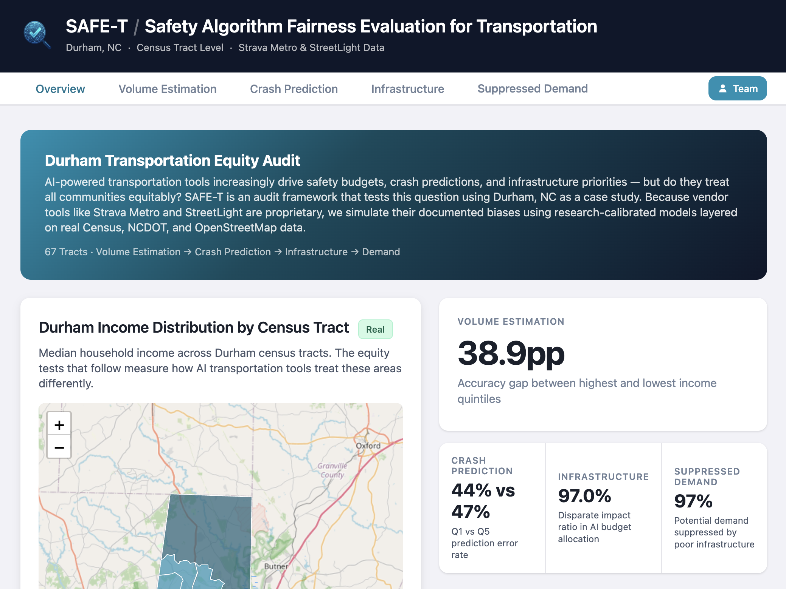
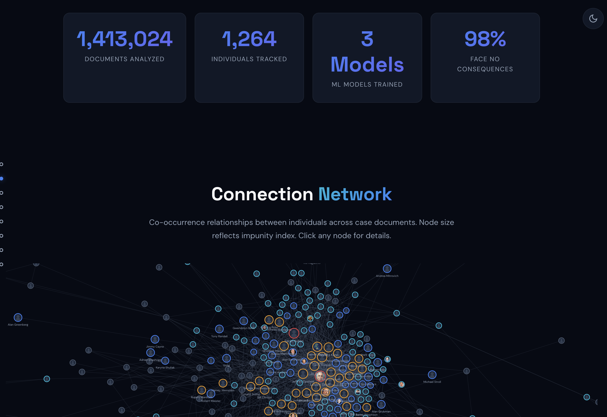
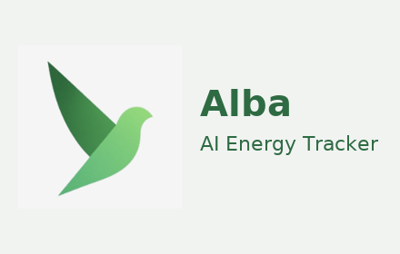
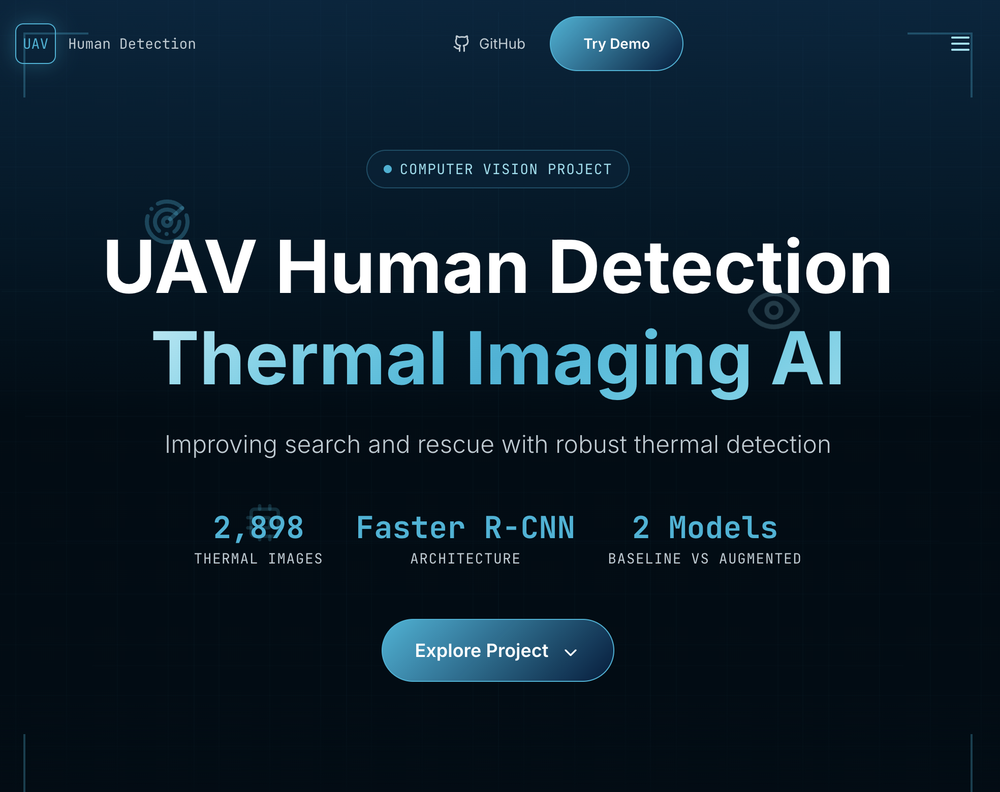
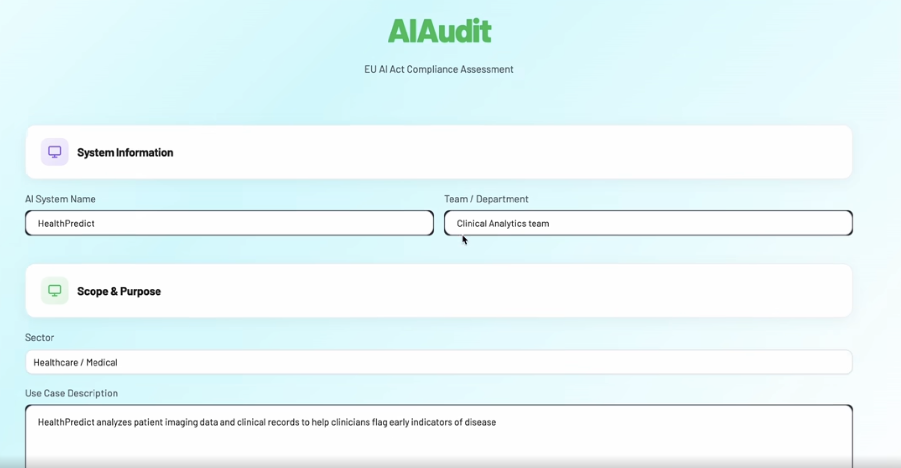
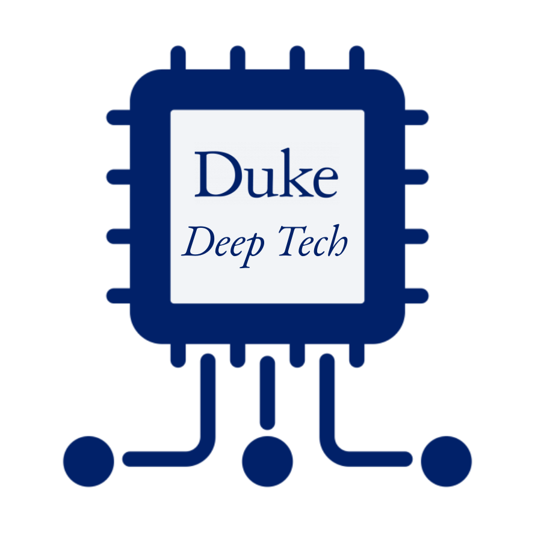
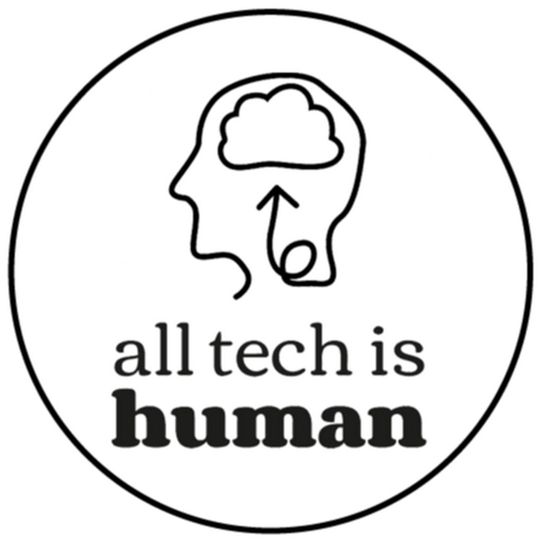

Building AI that is safe, useful, and engineered for impact.
AI engineer and product builder at Duke who works at the intersection of safety, governance, and user experience.

About
About me
I'm a Master of Engineering student in AI at Duke with a background in public policy, trust and safety, and machine learning. I started on the policy side, studying how technology shapes society and where guardrails fail. But as AI began moving faster than regulation, I realized real impact happens inside the product cycle. So I learned to build.
Now I work at the intersection of model behavior, governance, and human-centered design. I make tools that surface what algorithms are actually doing: who they prioritize, who they miss, and what the gap looks like.
Education
BA, Public Policy
Projects
Selected projects

Python + GeoPandas + Vite + Leaflet.js
SAFE-T
2nd place, Duke Society-Centered AI Hackathon
End-to-end equity audit tool that runs 4 bias tests on AI-driven transportation systems; uncovered ~25% undercounting in low-income areas and a 29.5% disparate impact ratio in infrastructure allocation, directly informing Durham transportation policy.

NLP + Machine Learning
The Impunity Index
NLP-driven investigation into the Epstein document corpus.
We extract machine learning features from 1,413,024 DOJ/EFTA documents across 5 dataset releases, train classifiers on 66 hand-labeled individuals, and compute an Impunity Index that quantifies the gap between documentary evidence and real-world consequences across all 1,264 individuals named in the public record.

Chrome Extension
Alba
Privacy-first carbon footprint tracker for web browsing.
Privacy-first Chrome extension that tracks and visualizes the carbon footprint of your web browsing in real time.

Computer Vision + Deep Learning
UAV Human Detection
Thermal imaging AI for search and rescue.
Deep learning computer vision system for thermal UAV-based human detection in search-and-rescue scenarios using Faster R-CNN with temperature scaling calibration.

FastAPI + Streamlit + MLflow
AI Audit
EU AI Act compliance system.
Automated compliance audit system for the EU AI Act using TF-IDF, MLflow, FastAPI, and Streamlit.
Writing
Selected writing
Your AI Companion Is a Business Product
Why AI companions feel supportive, reassuring, and human, and why that's exactly the point.
ReadNeural Privacy and Democratic Self-Rule
Governance challenges of invasive brain-computer interfaces.
Read Full bookletExplainability Isn't About the Output
What Unmasking AI revealed about datasets, omissions, and the limits of post-hoc explanations.
ReadBabies, Brains, and Robot Sociopaths
What child development and psychopathy can teach us about building safer AI systems.
ReadDeepfakes: Seeing is No Longer Believing
Why deepfake abuse is spreading faster than our protections.
ReadThe Algorithm That Helped Me Choose to Pursue a Master of Engineering
How thinking like a machine learning model helped me make a major career change.
ReadThe Antitrust Paradox in the Age of Big Tech
How Apple, Google, Amazon, Microsoft, and Meta rewrote competition and why regulators are still playing catch-up.
ReadYour Body, Their Data
Why convenience comes with risks, and what Flo Health teaches us about privacy in an age of digital surveillance.
ReadThe Black Box of Hiring
Applicant tracking systems have reshaped hiring, but at what cost to fairness and equity?
ReadWhen Your Face Becomes Data
The hidden risks and ethical dilemmas of facial recognition in everyday life.
ReadSkills
Skills & Tools
Python
JavaScript
Node.js
R
SQL
HTML/CSS
PyTorch
TensorFlow
spaCy
Legal-BERT
Hugging Face
GradCAM
OpenAI API
Embeddings
Git
Docker
GCP
AWS
Streamlit
FastAPI
MLflow
Jira
Confluence
GeoPandas
Pandas
NumPy
Altair
Leaflet.js
Lean Canvas
Figma
Vite
Experience
Experience

Research Assistant, Deep Tech at Duke
Duke University · Jan 2025 - Present
Building an AI-generated music detection system for Spotify using confidence scoring and catalog analysis. Contributing to Duke's AI for Metascience program in collaboration with OpenAI.
Trust & Safety Analyst
Tremau · May 2024 - Sep 2024
Conducted risk assessments for social media platforms and developed compliance roadmaps under the EU Digital Services Act. Translated regulatory frameworks into actionable strategy for clients navigating AI-driven content moderation.
AI Ethics Fellow
Metaphysic.ai · Feb 2024 - Jul 2024
Co-developed the legal and ethical onboarding framework for hyper-realistic generative AI with the Head of Ethics. Onboarded 8 clients in 3 months with 100% compliance. Authored a 20+ page policy paper on US copyright law and AI training data.
Cybersecurity Research Assistant
Duke Sanford School of Public Policy · Dec 2023 - May 2024
Bridged technical security guidelines and policymaking across Panama, Chile, Colombia, and Costa Rica. Helped senior leaders in government and private sector translate cybersecurity best practices into legislation.
Tech & Public Policy Fellow
Beyond the Screen · May 2023 - Aug 2023
Worked directly with Facebook whistleblower Frances Haugen to build a comprehensive database on social media harms. Authored five literature reviews covering content moderation, polarization, misinformation, and national security.
VP & Co-Founder
Duke Tech for Change · Aug 2024 - Aug 2025
Co-founded Duke's branch of Tech for Change, a national network of students using technology to foster a more equitable society. Grew membership 67% in two months.

Board Member
All Tech Is Human · Apr 2024 - Aug 2025
UNet Board of Directors for a nonprofit bridging tech and society. Connected student communities globally to grow the responsible tech pipeline.
Contact